서인허가 서대리 · 갑지 만들기
사업장 정보 한 번만 넣으면
여러 장의 갑지가 한 번에
서류 선택부터 다운로드까지, 실제 화면으로 따라가며 확인해 보세요.
1
서류 선택
필요한 갑지를 검색하거나 목록에서 직접 고릅니다.
1-1검색하거나 직접 선택분야별로 나뉘어 있어 원하는 서류를 바로 찾을 수 있습니다.
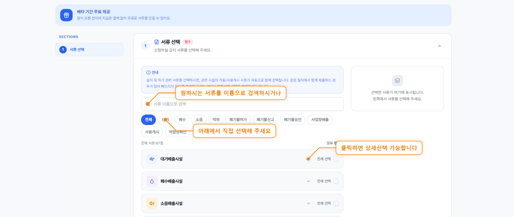
1-2이름으로 검색하면 자동으로 필터서류 이름 일부만 입력해도 관련 서류만 남습니다.
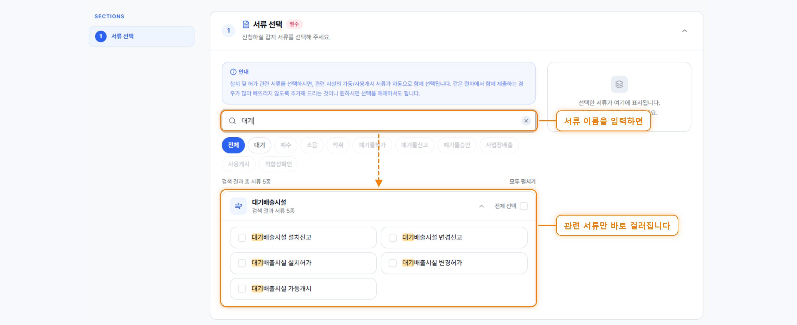
1-3체크하면 오른쪽에 바로 담깁니다고른 서류를 한눈에 확인하고 다음 단계로 넘어갑니다.
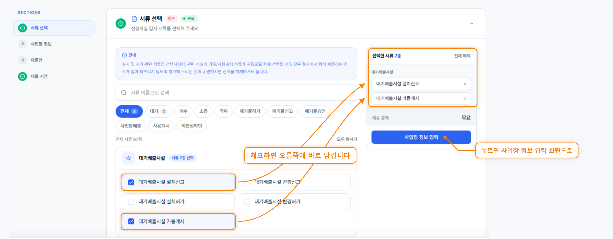
2
사업장 정보
사업자 유형에 따라 입력 항목이 달라집니다.
2-1개인사업자를 선택한 경우대표자 주민등록번호를 입력합니다.
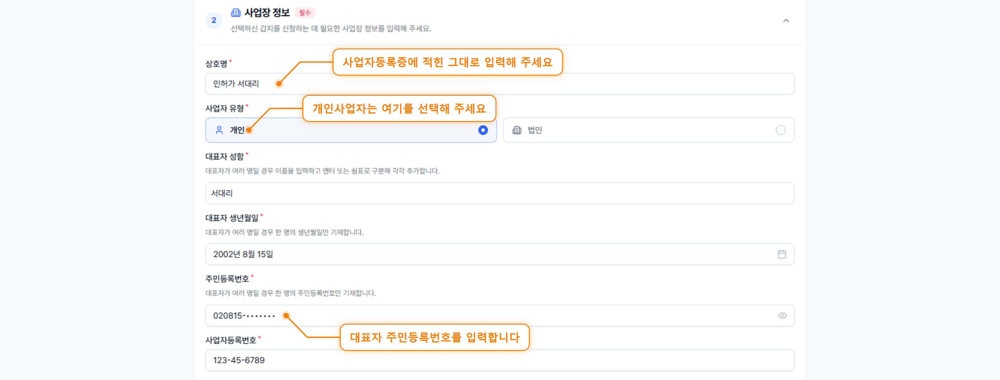
2-2법인사업자를 선택한 경우주민등록번호 대신 법인등록번호를 입력합니다.
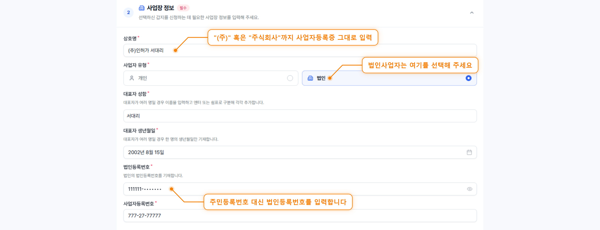
2-3주소 · 연락처 · 업종주소는 검색으로, 업종은 코드나 분류명 하나만 넣으면 자동완성됩니다.
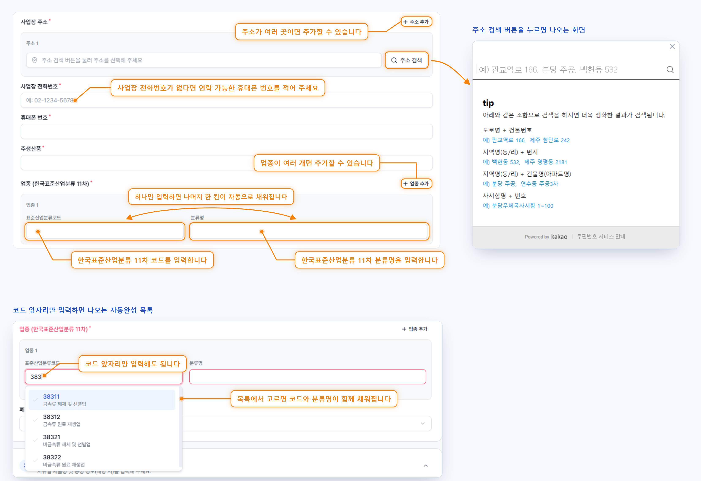
3
제출청 · 제출 시점
서류별 제출처와 서류에 기재할 날짜를 정합니다.
3-1제출청은 한 번에 또는 개별로첫 제출청을 넣으면 나머지에도 같이 적용할지 물어봅니다.
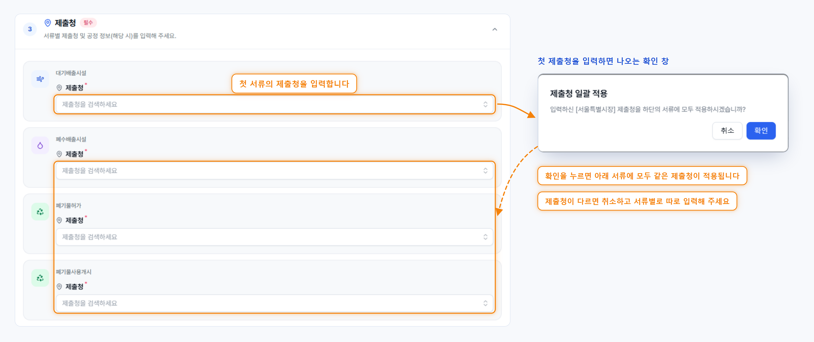
3-2제출 시점 단위 선택일자 · 연/월 · 연도 중 서류에 맞는 단위로 입력합니다.
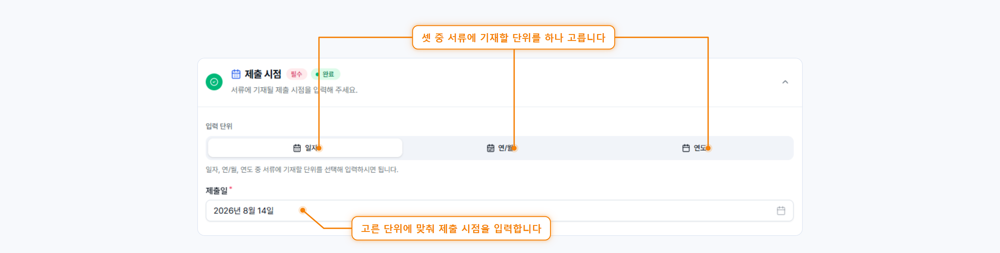
4
검증 후 서류 생성
빠진 항목을 확인하고, 최종 확인 후 서류를 받습니다.
4-1검증하기로 빠진 항목 찾기채우지 않은 항목이 빨갛게 표시되고, 완성도가 함께 보입니다.
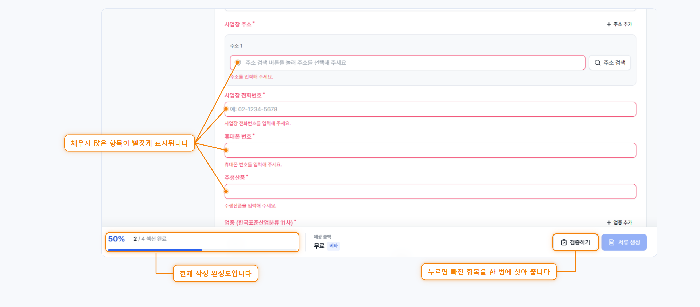
4-2100%가 되면 서류 생성모든 항목을 채우면 생성 버튼이 켜집니다.
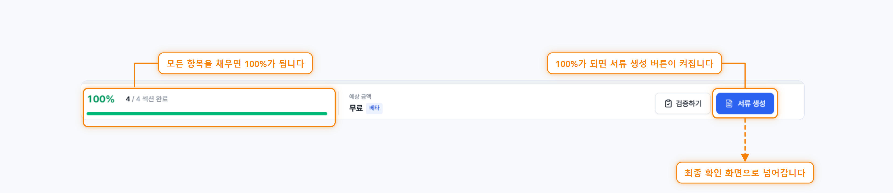
4-3마지막으로 입력 내용 확인베타 기간에는 결제 없이 무료로 생성됩니다.
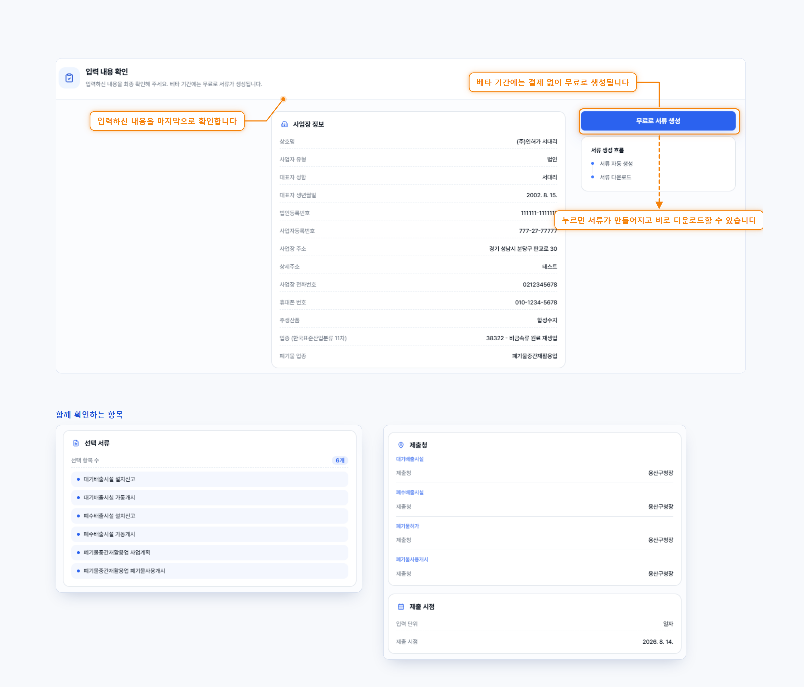
4-4생성 완료 후 다운로드만들어진 서류는 3일간 보관됩니다.
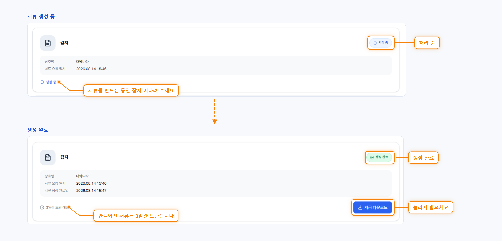
사업장 정보 한 번, 갑지는 한 번에
여러 장을 따로 쓰지 않아도 됩니다. 실수 없이 빠르게 준비하세요.
인허가 서대리 · seodaeri.com